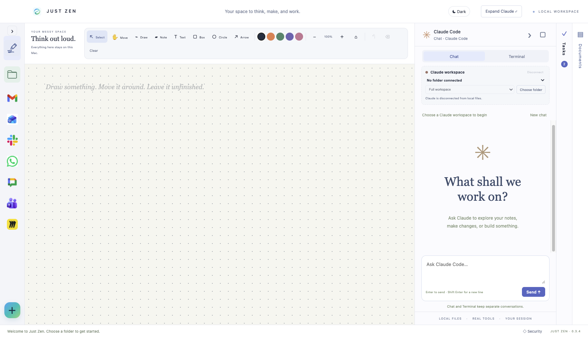

Your apps, your files, your notes and tasks, with Claude Code working alongside you. Nothing to switch to, nowhere else to go.

Just Zen puts the things you actually use next to each other, so a message, the file it's about, the note you're writing and the assistant helping you are all on screen at once.
Pick from a library of a hundred web apps or add any website. Every one lives in the sidebar with unread counts and notifications, and opens in its own pane inside Just Zen.
Claude Code runs in a pane beside your apps with access to the folder you give it. Ask it to read your notes, draft a reply, change a file or build something, and it does it right there.
An infinite whiteboard for thinking out loud, a Files pane that previews Markdown with wiki links, a Documents pane for PDFs and Word files, and a task list that stays visible.
Because Claude sits in the same window as your apps and files, there's no copying and pasting between tools. Point it at your vault or a project folder, keep Slack open on the left, and let it get on with it while you carry on.
You stay in control. Claude only sees the folder you connect, runs inside an operating-system sandbox, and asks before it runs a command or touches anything outside your notes.
There is no Just Zen cloud. Your notes, tasks, whiteboard and settings live on your Mac, encrypted with the Keychain.
Every website runs in Chromium's sandbox in its own profile, with no route to your files or to Claude.
Chat runs inside Anthropic Sandbox Runtime and macOS Seatbelt. It reads the folder you chose and talks only to Anthropic.
Releases are signed with a Developer ID and notarized by Apple. Security patches are tested, built and installed without you doing anything.
Just Zen is open source. Every line, the security review and the automated checks are public at github.com/kierankeene122/just-zen, so you can inspect exactly what runs on your Mac. The full picture, including what still depends on you, is on the Security page inside the app.
Just Zen is free software provided as is, without warranty of any kind, under the ISC licence. You are responsible for how you use it and for the accounts and data you connect to it. Inspect the code, decide for yourself, and keep backups.